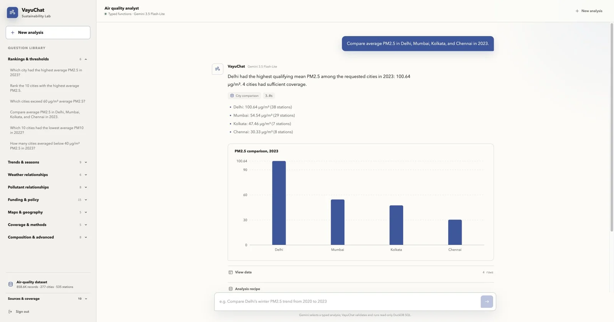

Web · hosted
Open app
Research workspace
Compare cities, inspect coverage, make maps, and trace every result back to its source and analysis recipe.

Current React interface · four-city comparison
858,604 station-days · 277 cities · 10 disclosed sources
Watch the research demo